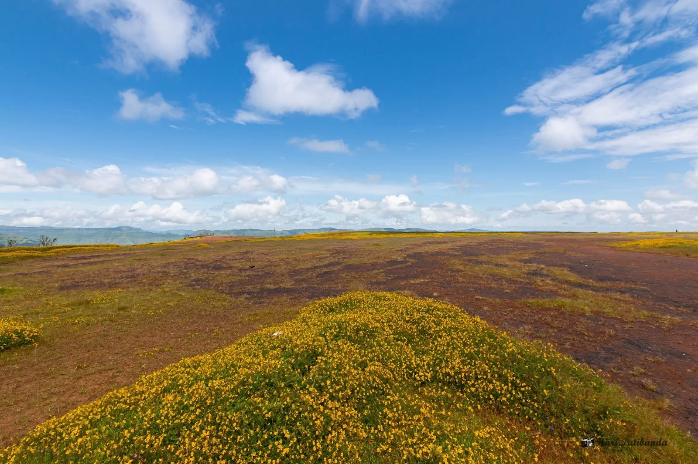
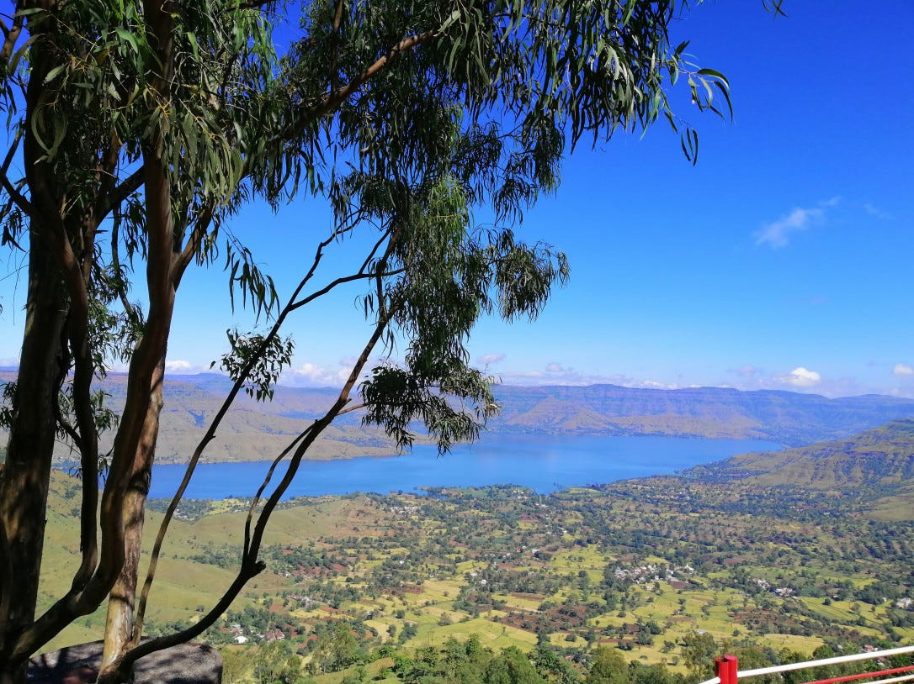

❮
❯
Located in the Sahyadri Hills of Maharashtra, Panchgani is a serene hill station known for its breathtaking viewpoints, strawberry farms, and colonial-era charm. It is an ideal destination for a peaceful retreat.
The best time to visit is from October to May.
- Monsoon (June - September): Perfect for lush green landscapes and waterfalls.
- Winter (October - February): Best for sightseeing and outdoor adventures.
- Summer (March - May): Enjoy the cool climate and fresh strawberries.
Get ready for an unforgettable experience in Panchgani.